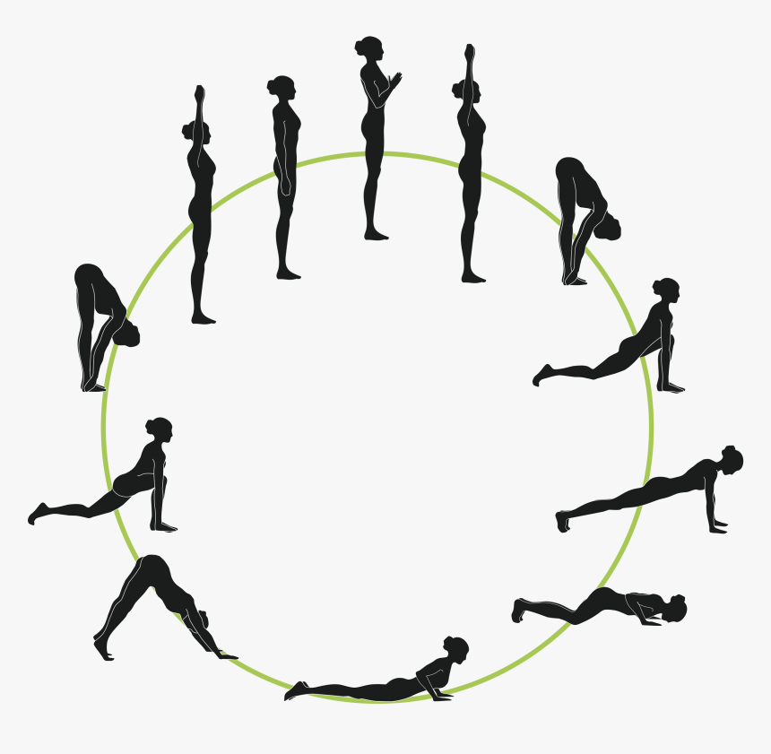

<!DOCTYPE html>
<html lang="en">
    <head>
        <meta charset="utf-8">
        <meta name="viewport" content="width=device-width, initial-scale=1">
        <link rel="stylesheet" type="text/css" href="css/html5reset.css">
        <link rel="stylesheet" type="text/css" href="css/style.css">

        <link rel="preconnect" href="https://fonts.googleapis.com">
        <link rel="preconnect" href="https://fonts.gstatic.com" crossorigin>
        <link href="https://fonts.googleapis.com/css2?family=Covered+By+Your+Grace&family=Karla:wght@500&display=swap" rel="stylesheet">
        
        <title>Flows</title>
    </head>
</html>

<body>
    <header>
        <a class = "skip" href="#main">Skip to Content</a>
        <nav>
            <ul>
                <li><a href = "index.html">Home</a></li>
                <li class = "flowsli"><a href = "flows.html">Flows</a></li>
                <li><a href = "studios.html">Studios</a></li>
                <li><a href = "mindfulness.html">Mindfulness</a></li>
            </ul>
        </nav>
    </header>

    <main id = "main">
        <h1 class = "flows title">FLOWS</h1>
        <p>A yoga flow incorporates energetic movement through a series of asanas (yoga postures), by which the student experiences a sense of fluid physical motion. This continuous flow of movement and breath generates a meditative state, encouraging practitioners to let go of thought and focus on experience of the present moment. In flow yoga, each movement into or out of a posture is timed with an inhalation or an exhalation in a choreographed sequence. </p>
        <p>Here is my favorite flow which can be completed in under 10 minutes, but can be repeated a few times on each side to allow for a longer, more challenging practice.</p>
        
        <div class= "flow"> 
            <ul>
                <li>1. Child's pose: Bring your toes together with knees about mat-distance apart, and press on your hands to move your hips back, bringing your head and upper body to the floor.</li>
                <li>2. Table top: From child's pose, reach your arms towards the front and separate hands shoulder-distance apart, while pressing your hands onto the ground. Inhale as you come forward into table top, shoulders over wrists, knees underneath hips.</li>
                <li>3. Plank: Once you have stability in table top, extend your legs one at a time towards the back of the room into plank pose. Keep your belly engaged.</li>
                <li>4. Downward facing dog: Lift your butt into the air and bring softness into your knees, bending them a little to give your hips time to warm up.</li>
                <li>5. Warrior I: Lift your right leg up towards the ceiling as you breathe in, and bring that foot to the top of the mat. You can use your arm to help you out. Bring your foot forward and the back foot into the ground. Press on both feet, inhale, and lift your arms up into warrior I. Your right hip moves back as you lengthen forward, chest up, and a little upper body backbend.</li>
                <li>6. Warrior II: Open into warrior II with your right hand straight in front, and your left straight behind you. Your left foot should be facing forward, and the right foot towards the front of the mat with your front knee bent at 90 degrees. Shoulders should be over your hips as you keep your arms long.</li>
                <li>7. Reverse warrior: Bring your left hand onto your thigh, inhale, and lift your right hand back over your head. Your hands will then move down towards the floor.</li>
                <li>8. Modified flow: Move into plank pose in the modified flow. Bend your knees, bend your elbows and control your body as you come down in one line onto the floor. Lift your chest up into cobra pose, then press on your hands and knees through to table top and then downward facing dog.</li>
                <li>9. Warrior I: Lift your left leg high as you breathe in, and step the foot towards the top of the mat. Bring your back heel down onto the floor, hip-width distance apart with your feet grounded. Lift your arms up into warrior I. Have strength in stability, lift your gaze, lift the belly, and engage both of your legs.</li>
                <li>10. Warrior II: Open up into warrior II as you breathe in, bending the front knee over the ankle. Press the entire outside of the right leg towards the back of your mat and sit lower into the pose.</li>
                <li>11. Reverse warrior: Bring your right hand to your thigh, left arm up. Windmill your hands down towards the floor to plank pose.</li>
                <li>12. Half chaturanga: Bend your knees into a half chaturanga, bending your elbows halfway down. Move into upward facing dog or cobra. Breathe comfortably with your shoulders back, and move into downward facing dog.</li>
                <li>13. Savasana: Let your hands go and slowly roll your body down onto the floor. Extend your legs into savasana.</li>
            </ul>
        </div>

        <p id= "poses">These 9 poses are important to practice as they come up in many flows. With repetition, these poses will start to feel very natural and intuitive.</p>
        <div class="grid1">
                <div class="box1" alt= "Child's pose"></div>
                <div class="box2" alt= "Table top"></div>
                <div class="box3" alt= "Plank"></div>
                <div class="box4" alt= "Downward Facing Dog"></div>
                <div class="box5" alt= "Warrior I"></div>
                <div class="box6" alt= "Warrior II"></div>
                <div class="box7" alt= "Reverse Warrior"></div>
                <div class="box8" alt= "Airplane"></div>
                <div class="box9" alt= "Tree"></div>
        </div>
        
    </main>

    <footer>
        <p>Kate Leib &copy; 2021</p>
	</footer>
</body>